Inhalt Index DeskTop Bronstein

 Dynamische Systeme und Chaos Gewöhnliche Differentialgleichungen und Abbildungen Qualitative Theorie gewöhnlicher Differentialgleichungen Stabilitätstheorie
Dynamische Systeme und Chaos Gewöhnliche Differentialgleichungen und Abbildungen Qualitative Theorie gewöhnlicher Differentialgleichungen Stabilitätstheorie


Betrachtet wird die nichtautonome Differentialgleichung (17.11). Die Lösung 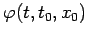 von (17.11) heißt LYAPUNOV-stabil, wenn gilt:
| 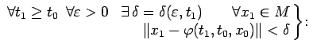 | 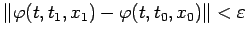 | ||
| 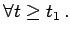 | (17.16a) |
| 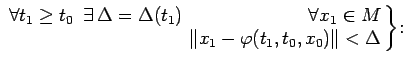 | 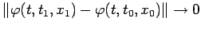 | ||
| 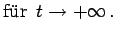 | (17.16b) |
| Beispiel |
|
Gegeben sei ein Fluß in 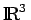, der den Torus T2 als invariante Menge besitzt. Lokal sei in Winkelkoordinaten der Fluß beschrieben durch 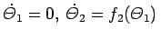, wobei 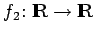 eine 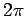-periodische glatte Funktion sei, für die gilt: 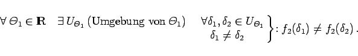
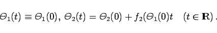
|